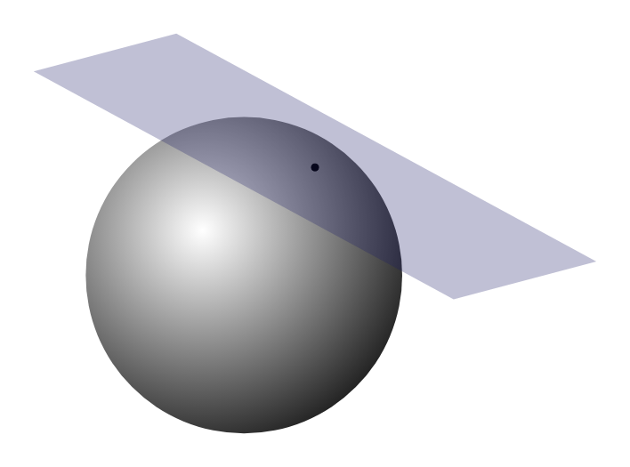
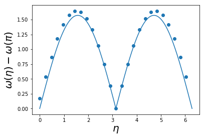

H = J\sum_{\langle j\,k\rangle} \sigma_j \sigma_k
‘spin’ variables \sigma_j=\pm 1
{\langle j\,k\rangle} indicates sum over nearest neighbour pairs
J<0 favours aligned spins, leading to ferromagnetism
But… not really a quantum model
1 spin-1/2: \psi_{\pm} in s^z basis (say). N-spins: \Psi_{\sigma_1,\ldots \sigma_N} has 2^N components
Product states \lvert{\sigma_1}\rangle\lvert{\sigma_2}\rangle\cdots \lvert{\sigma_N}\rangle form a basis
\lvert{\Psi}\rangle=\sum_{\{\sigma_j=\pm\}}\Psi_{\sigma_1\cdots \sigma_N}\lvert{\sigma_1}\rangle\lvert{\sigma_2}\rangle\cdots \lvert{\sigma_N}\rangle
\Psi_{\alpha_{1}\alpha_{2}\cdots \alpha_{N}}(\mathbf{r}_1,\ldots \mathbf{r}_N)=\varphi_{\alpha_{1}}(\mathbf{r_{1}})\varphi_{\alpha_{2}}(\mathbf{r_{2}})\cdots\varphi_{\alpha_{N}}(\mathbf{r_{N}})
\lvert{\Psi_{\alpha_{1}\alpha_{2}\cdots \alpha_{N}}}\rangle=\lvert{\varphi_{\alpha_{1}}}\rangle\lvert{\varphi_{\alpha_{2}}}\rangle\cdots\lvert{\varphi_{\alpha_{N}}}\rangle
\lvert{\Psi_{\alpha_{1}\alpha_{2}\cdots \alpha_{N}}}\rangle=\lvert{\varphi_{\alpha_{1}}}\rangle\otimes\lvert{\varphi_{\alpha_{2}}}\rangle\cdots\otimes\lvert{\varphi_{\alpha_{N}}}\rangle
Spin operators obey [s^a,s^b]=i\epsilon_{abc}s^c
A spin operator s^a_j acts on j^\text{th} spin
s^a_j\lvert{\sigma_1}\rangle\lvert{\sigma_2}\rangle\cdots \lvert{\sigma_N}\rangle = \lvert{\sigma_1}\rangle\lvert{\sigma_2}\rangle\cdots \lvert{\sigma_{j-1}}\rangle (s^a \lvert{\sigma_j}\rangle) \lvert{\sigma_{j+1}}\rangle\cdots\lvert{\sigma_N}\rangle
s^a_j = \overbrace{\mathbb{1}\otimes \cdots \mathbb{1}}^{j-1}\otimes s^a \otimes \overbrace{\mathbb{1} \otimes\cdots \mathbb{1}}^{N-j}
Check
What is [s^a_j,s^b_k] for j\neq k?
H = 4J\sum_{\langle j\,k\rangle} s^z_j s^z_k
E_{\sigma_1\cdots \sigma_N} = J\sum_{\langle j\,k\rangle} \sigma_j \sigma_k
H = J \sum_{\langle j\,k\rangle} \mathbf{s}_j \cdot \mathbf{s}_k
\left[s^a_j,s^b_k\right]=i\delta_{jk}\epsilon_{abc}s^c_j
Unlike the elastic lattice, not possible to solve in general
Captures many of the dynamical features (e.g. spin waves) of real magnetic materials.
H = J \sum_{j=1}^N \mathbf{s}_j \cdot \mathbf{s}_{j+1},
As usual \mathbf{s}_j=\mathbf{s}_{j+N} (periodic boundary conditions).
Some anisotropic materials have magnetic atoms arranged in weakly coupled chains
\mathbf{s}_j \cdot \mathbf{s}_{j+1} = s^z_js^z_{j+1} + \frac{1}{2}\left(s^+_js^-_{j+1} +s^-_js^+_{j+1}\right)
where s^\pm = s^x\pm i s^y s^+ = \begin{pmatrix} 0 & 1 \\ 0 & 0 \end{pmatrix},\qquad s^- = \begin{pmatrix} 0 & 0 \\ 1 & 0 \end{pmatrix}
are the spin raising and lowering operators
\lvert{\text{FM}}\rangle \equiv \lvert{+}\rangle_1 \lvert{+}\rangle_2 \cdots \lvert{+}\rangle_N
Check
Show that this is eigenstate of H with E_0\equiv JN/4
\mathbf{S} = \sum_{j=1}^N \mathbf{s}_j=(S^x, S^y, S^z)
Rotational invariance implies that \lvert{\text{FM}}\rangle is member of multiplet of N+1 degenerate eigenstates related by rotations
These states can be generated by acting with S^-=S^x-iS^y
S^-\lvert{\text{FM}}\rangle = \sum_{j=1}^N s^-_j\lvert{\text{FM}}\rangle = \sum_{j=1}^N \lvert{+}\rangle_1\lvert{+}\rangle_2\cdots \lvert{+}\rangle_{j-1} \lvert{-}\rangle_j\lvert{+}\rangle_{j+1}\cdots \lvert{+}\rangle_N.
Check
S^z = N/2-1, but \mathbf{S}^2 and H unchanged.
\lvert{j}\rangle = \lvert{+}\rangle_1\lvert{+}\rangle_2\cdots \lvert{+}\rangle_{j-1} \lvert{-}\rangle_j\lvert{+}\rangle_{j+1}\cdots \lvert{+}\rangle_N
\mathbf{s}_j \cdot \mathbf{s}_{j+1} = s^z_js^z_{j+1} + \frac{1}{2}\left(s^+_js^-_{j+1} +s^-_js^+_{j+1}\right)
\left(s^+_j s^-_{j+1} +s^-_js^+_{j+1}\right)\lvert{+}\rangle_j\lvert{-}\rangle_{j+1} = \lvert{-}\rangle_j\lvert{+}\rangle_{j+1}
H\lvert{j}\rangle = (1-N/4) \lvert{j}\rangle - \frac{1}{2}\left(\lvert{j-1}\rangle+\lvert{j+1}\rangle\right) (set J=-1 from now)
Leaves us in subspace spanned by states \lvert{j}\rangle: this is subspace with S_z=N/2-1
Flips are like particles (magnons), with Hamiltonian conserving number
H\lvert{j}\rangle = (1-N/4) \lvert{j}\rangle - \frac{1}{2}\left(\lvert{j-1}\rangle+\lvert{j+1}\rangle\right).
\lvert{\eta}\rangle = \frac{1}{\sqrt{N}}\sum_{j=1}^N e^{i\eta j}\lvert{j}\rangle, \qquad \eta = \frac{2\pi n}{N}
\omega(\eta) = 2\sin^2\eta/2
Dispersion is periodic, as for elastic chain, but quadratic, rather than linear, at small \eta
\eta=0 corresponds to the state S^-\lvert{\text{FM}}\rangle
A magnon has energy \propto J
System with extensive energy / finite temperature must have many magnons
Dimension of subspace of n flipped spins is \binom{N}{n}
Magnons can’t sit on the same site. Things get difficult!
Let’s try and guess the ground state for J>0
Since anti-aligning spins should be favoured, we might try
\lvert{\text{AFM}}\rangle \equiv \lvert{+}\rangle_1\lvert{-}\rangle_{2}\cdots \lvert{+}\rangle_{N-1}\lvert{-}\rangle_{N}
\mathbf{s}_j \cdot \mathbf{s}_{j+1} = s^z_js^z_{j+1} + \frac{1}{2}\overbrace{\left(s^+_js^-_{j+1} +s^-_js^+_{j+1}\right)}^{\text{swaps }\lvert{+}\rangle_j\lvert{-}\rangle_{j+1}}, spin flip terms cause spins to move about. Ground state is more complicated!
For the AFM chain, quantum fluctuations too strong for AFM order
Antiferromagnets do exist in higher dimensions, and Néel state \lvert{\text{AFM}}\rangle is good starting approximation
Generalize model to s>1/2 (magnetic ions can have higher spin)
Develop approximations that work for s\gg 1/2
Hope that the qualitative behaviour we find holds for s=1/2
Represent spins as oscillators!
Coupled spins becomes coupled oscillators
Representation not linear, so we get anharmonic chain
Harmonic approximation justified when spin large
\begin{aligned} s^+ &=\sqrt{2s}\sqrt{1-\frac{a^\dagger a^{\vphantom{\dagger}}}{2s}}a^{\vphantom{\dagger}}\\ s^- &= \sqrt{2s}a^\dagger\sqrt{1-\frac{a^\dagger a^{\vphantom{\dagger}}}{2s}} \\ s^z &= \left(s - a^\dagger a^{\vphantom{\dagger}}\right) \end{aligned}
Check
Show that [a^{\vphantom{\dagger}},a^\dagger]=1 reproduces the spin commutation relations [s^a,s^b]=i\epsilon_{abc}s^c
s^{\pm} and a^{\vphantom{\dagger}}, a^\dagger both shift us up and down a ladder of states. s^\pm\lvert{s,m}\rangle = \sqrt{s(s+1)-m(m\pm 1)}\lvert{s,m\pm 1}\rangle Relation between s^z and number of quanta n is simple: s^z = s - n
Difference: 2s+1 spin states, but infinite oscillator states
s^+\propto a^{\vphantom{\dagger}}, s^-\propto a^\dagger doesn’t work. Something needed to stop us lowering beyond s^z=-s s^- = \sqrt{2s}a^\dagger\sqrt{1-\frac{a^\dagger a^{\vphantom{\dagger}}}{2s}}

Classical spin described by point on sphere of radius \sim s
Large s: approximate locally by plane
Near north pole [s^x,s^y]=is^z\sim is resembles [x,p]=i
Therefore s^\pm resemble a^{\vphantom{\dagger}}, a^\dagger
\begin{aligned} s^+ &\sim \sqrt{2s}a^{\vphantom{\dagger}}\qquad s^- \sim \sqrt{2s}a^\dagger\qquad s_z = \left(s - a^\dagger a^{\vphantom{\dagger}}\right). \end{aligned}
neglecting terms of order s^{-1/2}.
\begin{aligned} s^x &\sim \sqrt{s}x \nonumber\\ s^y &\sim \sqrt{s}p\nonumber\\ s_z &= \left(s - \frac{1}{2}[x^2 + p^2 - 1] \right) \end{aligned}
where x = \frac{1}{\sqrt{2}}(a^{\vphantom{\dagger}}+a^\dagger) and p = \frac{i}{\sqrt{2}}(a^\dagger-a^{\vphantom{\dagger}})
\begin{aligned} s^x &\sim \sqrt{s}x \nonumber\\ s^y &\sim \sqrt{s}p\nonumber\\ s_z &= \left(s - \frac{1}{2}[x^2 + p^2 - 1] \right) \end{aligned}
H = J \sum_{j=1}^N \mathbf{s}_j \cdot \mathbf{s}_{j+1}
H\sim NJ s^2 + sNJ+ \overbrace{sJ \sum_{j=1}^N \left[x_j x_{j+1} + p_j p_{j+1}-x_j^2 - p_j^2\right]}^{\equiv H^{(2)}} + \ldots
\begin{aligned} x_j(t) &= \frac{1}{\sqrt{N}}\sum_{|n| \leq (N-1)/2} q_n(t) e^{i\eta_n j},\nonumber\\ p_j(t) &= \frac{1}{\sqrt{N}}\sum_{|n| \leq (N-1)/2} \pi_n(t) e^{-i\eta_n j}\\ H^{(2)} &= -2sJ \sum_{|n| \leq (N-1)/2} \sin^2(\eta_n/2)\left[q_n q_{-n} + \pi_n\pi_{-n}\right] \end{aligned} `
\omega_{\text{FM}}(\eta) = 4s\left|J\right|\sin^2(\eta/2) c.f. \omega(\eta) = 2\sin^2\eta/2 that we found for s=1/2
H\sim NJ s^2 + sNJ+ \overbrace{ -2sJ \sum_{|n| \leq (N-1)/2} \sin^2(\eta_n/2)\left[q_n q_{-n} + \pi_n\pi_{-n}\right]}^{\equiv H^{(2)}} + \ldots
-2sJ\sum_{|n| \leq (N-1)/2} \frac{1}{2}\sin^2(\eta_n/2) = -sJN
Close to \lvert{\text{FM}}\rangle few oscillator quanta; harmonic approximation OK
Classically, small amplitude nonlinear oscillations treated as linear
What about AFM case? Make it look like FM
Rotate every other spin through \pi about the y axis, so that
(s^x_j,s^y_j,s^z_j)\longrightarrow (-s^x_j,s^y_j,-s^z_j),\quad j\text{ odd}.
H = -J \sum_{j=1}^N \left[s^x_j s^x_{j+1} - s^y_j s^y_{j+1} + s^z_j s^z_{j+1}\right]
Harmonic approximation means: close to AFM in original variables
Oscillator Hamiltonian is now H^{(2)} = 2sJ \sum_{|n| \leq (N-1)/2} \left[\sin^2(\eta/2)q_n q_{-n} + \cos^2(\eta/2)\pi_n\pi_{-n}\right], corresponding to a dispersion relation
\omega_{\text{AFM}}(\eta) = 2sJ\left|\sin(\eta)\right|
\omega_{\text{AFM}}(\eta) = 2sJ\left|\sin(\eta)\right|.
Vanishes at both \eta=0 and Brillouin zone boundary \eta=\pi
Linear near both points, c.f. quadratic for FM
Compare
H_\text{FM}^{(2)} = -2sJ \sum_{|n| \leq (N-1)/2} \sin^2(\eta_n/2)\left[q_n q_{-n} + \pi_n\pi_{-n}\right] In FM both position and momentum terms vanish at \eta=0. This is the origin of quadratic dispersion at small \eta
\omega_{\text{AFM}}(\eta) = 2sJ\left|\sin(\eta)\right|.
\omega_{\text{dCP}}(\eta) = \frac{\pi J}{2}\left|\sin(\eta)\right|, Same functional form, but with a different overall scale

\langle{\text{FM}}\rvert s_j^z \lvert{\text{FM}}\rangle = s, \qquad \langle{\text{AFM}}\rvert s_j^z \lvert{\text{AFM}}\rangle = s(-1)^j
s^z_j = s - a^\dagger_ja^{\vphantom{\dagger}}_j.
How does second term effect \langle{0}\rvert s^z_j \lvert{0}\rangle in ground state of H^{(2)}?
We know it doesn’t for FM, because \lvert{\text{FM}}\rangle=\lvert{0}\rangle
s^z_j = s - a^\dagger_ja^{\vphantom{\dagger}}_j.
\begin{aligned} \langle{0}\rvert a^\dagger_j a^{\vphantom{\dagger}}_j\lvert{0}\rangle &= \langle{0}\rvert\frac{1}{N}\sum_{j=1}^N a^\dagger_j a^{\vphantom{\dagger}}_j\lvert{0}\rangle\\ \sum_{j=1}^N a^\dagger_j a^{\vphantom{\dagger}}_j &= \frac{1}{2} \sum_{j=1}^N \left(x_j^2 + p_j^2 - 1\right) = -\frac{N}{2} + \frac{1}{2}\sum_n \left(q_n q_{-n} + \pi_n\pi_{-n}\right). \end{aligned}
H_\text{FM}^{(2)} = -2sJ \sum_{|n| \leq (N-1)/2} \sin^2(\eta_n/2)\left[q_n q_{-n} + \pi_n\pi_{-n}\right]
and is zero in the ground state (c.f. ground state energy)
s^z_j = (-1)^j(s-a^\dagger_ja^{\vphantom{\dagger}}_j)
q_n q_{-n} + \pi_n\pi_{-n} doesn’t commute with \sin^2(\eta/2)q_n q_{-n} + \cos^2(\eta/2)\pi_n\pi_{-n}
Express both in oscillator variables
\begin{aligned} &a^{\vphantom{\dagger}}_\eta = \sqrt{\frac{|\tan(\eta /2)|}{2}}\left(q_n + \frac{i}{|\tan(\eta /2)|}\pi_{-n}\right)\nonumber\\ &a^\dagger_\eta = \sqrt{\frac{|\tan(\eta /2)|}{2}}\left(q_{-n} - \frac{i}{|\tan(\eta /2)|}\pi_{n}\right),\qquad \eta=2\pi n/N \\ &\sin^2(\eta/2)q_n q_{-n} + \cos^2(\eta/2)\pi_n\pi_{-n}=\frac{\omega(\eta)}{2}\left[a^\dagger_\eta a^{\vphantom{\dagger}}_\eta+a^{\vphantom{\dagger}}_\eta a^\dagger_\eta\right]. \end{aligned}
\begin{aligned} \frac{1}{N}\sum_{j=1}^N a^\dagger_j a^{\vphantom{\dagger}}_j &= \frac{1}{2N} \sum_{j=1}^N \left(x_j^2 + p_j^2 - 1\right) \\ &= -\frac{1}{2} + \frac{1}{2N}\sum_n \left(q_n q_{-n} + \pi_n\pi_{-n}\right) \end{aligned} \begin{aligned} \Delta s &= -\frac{1}{2}+\frac{1}{4N}\sum_n \left[|\tan(\eta_n/2)| + |\cot(\eta_n/2)|\right].\\ &= -\frac{1}{2}+\frac{1}{4}\int_{-\pi}^\pi \frac{d\eta}{2\pi} \left[|\tan(\eta_n/2)| + |\cot(\eta_n/2)|\right]. \end{aligned}
What went wrong? Our replacement \sum_n (\ldots) \longrightarrow \frac{N}{2\pi}\int_{-\pi}^\pi (\ldots)d\eta failed us because the summand is singular (c.f. \langle (u_i-u_j)^2\rangle in the elastic chain)
At finite N the sums are all finite if \eta=0, \pi are excluded
\Delta s \propto \log N
Check
Repeat the analysis on a 2D square lattice. You should find an integral over the two-dimensional Brillouin zone. Do you find divergences?